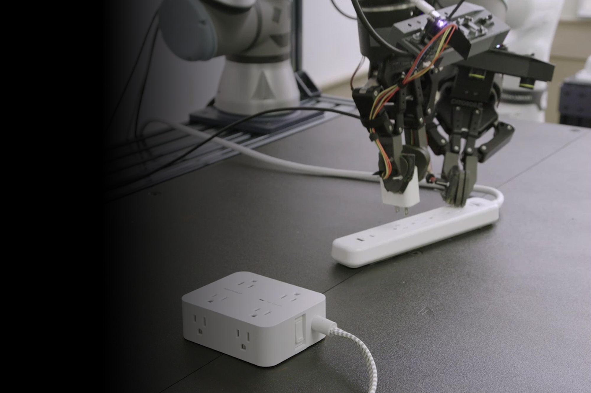

Microsoft Research · robot AI model
Rho-alpha
United States · 2026
Sources retrieved: 19 October 2026 (A)
- What it controls
- Arms and handsSource and note: What it controlsA microsoft.com/en-us/research/story/advancing-ai-for-the-physical-world/ · Retrieved 19 October 2026Note. Microsoft Research: “Rho-alpha translates natural language commands into control signals for robotic systems performing bimanual manipulation tasks”.
- Inputs
- Camera Language Robot state TouchSource and note: InputsA microsoft.com/en-us/research/story/advancing-ai-for-the-physical-world/ · Retrieved 19 October 2026Note. Microsoft Research: “Rho-alpha translates natural language commands into control signals for robotic systems performing bimanual manipulation tasks”; “For perception, Rho-alpha adds tactile sensing”. The Foundry Labs page lists “multimodal sensing (vision, proprioception, touch)”.
- Access
- Partners / early access onlySource and note: AccessA microsoft.com/en-us/research/story/advancing-ai-for-the-physical-world/ · Retrieved 19 October 2026Note. Microsoft Research: “We invite organizations interested in evaluating Rho-alpha for their robots and use cases to express interest in the Rho-alpha Research Early Access Program”. “Rho-alpha will also be made available via Microsoft Foundry at a later date”.
- Base model
- Phi vision-language model (version not named)Source and note: Base modelA microsoft.com/en-us/research/story/advancing-ai-for-the-physical-world/ · Retrieved 19 October 2026Note. Microsoft Research: “our first robotics model derived from Microsoft’s Phi series”.

Specifications
6/14 specifications disclosed 8 not stated
5 fields hidden 3 not-stated fields with a note stay ·
How to read the figuresShow guideClose
Not statedThe developer publishes nothing on itYesThe developer says it does
Select a source marker for source details and notes.
Release1/1 disclosed
Released21 January 2026
Source and note: ReleasedA microsoft.com/en-us/research/story/advancing-ai-for-the-physical-world/ · Retrieved 19 October 2026Note. Publication date in the page metadata: “2026-01-21T04:00:05+00:00”.
Input and output2/4 disclosed
Model typeNot stated
Source and note: Model typeA microsoft.com/en-us/research/story/advancing-ai-for-the-physical-world/ · Retrieved 19 October 2026Note. Microsoft Research's own term: “It can be described as a VLA+ model in that it expands the set of perceptual and learning modalities beyond those typically used by VLAs”.
InputsCamera Language Robot state Touch
Source and note: InputsA microsoft.com/en-us/research/story/advancing-ai-for-the-physical-world/ · Retrieved 19 October 2026Note. Microsoft Research: “Rho-alpha translates natural language commands into control signals for robotic systems performing bimanual manipulation tasks”; “For perception, Rho-alpha adds tactile sensing”. The Foundry Labs page lists “multimodal sensing (vision, proprioception, touch)”.
What it controlsArms and hands
Source and note: What it controlsA microsoft.com/en-us/research/story/advancing-ai-for-the-physical-world/ · Retrieved 19 October 2026Note. Microsoft Research: “Rho-alpha translates natural language commands into control signals for robotic systems performing bimanual manipulation tasks”.
Degrees of freedom controlledNot stated
Size and speed0/2 disclosed
ParametersNot stated
Control rateNot stated
Where it runs and what it is built on1/2 disclosed
On robot or cloudNot stated
Source and note: On robot or cloudA microsoft.com/en-us/research/story/advancing-ai-for-the-physical-world/ · Retrieved 19 October 2026Note. Microsoft names cloud-hosted use as its aim: “train, deploy, and continuously adapt their own cloud-hosted physical AI using their own data for their own robots and scenarios”.
Base modelPhi vision-language model (version not named)
Source and note: Base modelA microsoft.com/en-us/research/story/advancing-ai-for-the-physical-world/ · Retrieved 19 October 2026Note. Microsoft Research: “our first robotics model derived from Microsoft’s Phi series”.
Openness1/3 disclosed
Source and note: AccessA microsoft.com/en-us/research/story/advancing-ai-for-the-physical-world/ · Retrieved 19 October 2026Note. Microsoft Research: “We invite organizations interested in evaluating Rho-alpha for their robots and use cases to express interest in the Rho-alpha Research Early Access Program”. “Rho-alpha will also be made available via Microsoft Foundry at a later date”.
Licence documentNot stated
Licence typeNot stated
The developer’s own claims1/2 disclosed
Learns new tasksNot stated
Source and note: Learns new tasksA microsoft.com/en-us/research/story/advancing-ai-for-the-physical-world/ · Retrieved 19 October 2026Note. Microsoft Research: “we are working toward enabling Rho-alpha to continually improve during deployment by learning from feedback provided by people”. The Foundry Labs page: “the model learns continually from human teleoperation feedback during deployment”.
Works across robotsYes
Source and note: Works across robotsA microsoft.com/en-us/research/story/advancing-ai-for-the-physical-world/ · Retrieved 19 October 2026Note. Developer claim: “The model is currently under evaluation on dual-arm setups and humanoid robots”. The footage shows “a tactile sensor-equipped dual-UR5e-arm setup controlled by Rho-alpha”.Yes only if the developer itself says the model runs on different robot models, for example robots from two manufacturers or two of one manufacturer’s models. Several units of the same robot do not count.
Notes
Microsoft Research calls Rho-alpha a VLA+ model: it adds tactile sensing to the usual vision, language and action.
Microsoft lists its address as Redmond, Washington, USA, in its privacy statement.
Sources
One line per source, not per figure: a source has one retrieval date.
- Amicrosoft.com/en-us/research/story/advancing-ai-for-the-physical-world/Main source. Retrieved 19 October 2026